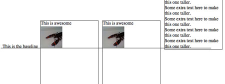

grid
/*------------------------------*\
Grid System
\*------------------------------*/
/* reseting the box model */
.row,
.column {
box-sizing: border-box;
}
/* clearing floats */
.row:before,
.row:after {
content: "";
display: table;
}
.row:after {
clear: both;
}
/* defining columns, common style
* float left will cause the element to become display:block
*/
.column {
position: relative;
float: left;
}
/* creating gutters */
.column + .column {
margin-left: 1.6%;
}
/* calculating column widths , 12columns
* 去除12列之间的 沟(gutter) 后的单列宽
* 1 column width = (100 - (margin * (maximum columns - 1)))/ maximum columns
* = (100 - (1.6 * ( 12 - 1 ) )) / 12
* = 6.86666666667
*
* 多列自动合并中间的 沟宽
* n column width = (1 column width * column span ) + (margin * (column span -1) ))
* 2 column width = (6.86666666667 * 2) + (1.6 * (2 - 1))
*
*/
/* 12 columns */
.column-1 {
width: 6.86666666667%;
}
.column-2 {
width: 15.3333333333%;
}
.column-3 {
width: 23.8%;
}
.column-4 {
width: 32.2666666667%;
}
.column-5 {
width: 40.7333333333%;
}
.column-6 {
width: 49.2%;
}
.column-7 {
width: 57.6666666667%;
}
.column-8 {
width: 66.1333333333%;
}
.column-9 {
width: 74.6%;
}
.column-10 {
width: 83.0666666667%;
}
.column-11 {
width: 91.5333333333%;
}
.column-12 {
width: 100%;
}
@media only screen and (max-width: 550px) {
.column-1,
.column-2,
.column-3,
.column-4,
.column-5,
.column-6,
.column-7,
.column-8,
.column-9,
.column-10,
.column-11,
.column-12 {
width: auto;
float: none;
}
.column + .column {
margin-left: 0;
}
}
flexbox
无法实现无缝瀑布流布局
flex 的容器属性
| 属性 | 值 | 描述 |
|---|---|---|
| [flex-flow] | [flex-direction],[flex-wrap] | 方向与换行 |
| [flex-direction] | row / row-reverse column / column-reverse |
方向 |
| [flex-wrap] | no-wrap / wrap wrap-reverse |
换行 |
| [align-items] | flex-start/baseline flex-end center stretch |
侧轴对齐方式 |
| [justify-content] | flex-start / flex-end center space-between space-around |
伸缩项分布方式 |
| [align-content] | flex-start / flex-end center space-between space-around stretch |
伸缩项对齐方式 |
.container {
display: -webkit-flex;
display: flex;
flex-flow: row wrap;
}
/* 最大200px，最小100px */
.initial {
-webkit-flex: initial;
flex: initial;
width: 200px;
min-width: 100px;
}
/* 固定200px */
.none {
-webkit-flex: none;
flex: none;
width: 200px;
}
/* 占据剩余宽度的 1/flex(n) */
.flex1 {
-webkit-flex: 1;
flex: 1;
}
/* 占据剩余宽度的 2/flex(n) */
.flex2 {
-webkit-flex: 2;
flex: 2;
}
column
内容多列显示
.three-column {
padding: 1em;
-moz-column-count: 3;
-moz-column-gap: 1em;
-webkit-column-count: 3;
-webkit-column-gap: 1em;
column-count: 3;
column-gap: 1em;
}
inline-block
可以用 inline-block 来布局，但需要记住
* vertical-align 会影响 inline-block 元素, 可能会设置为top
* 需要设置每一列的宽度
* 如果元素之间有空格，列之间会产生空隙
the default vertical-align value on inline or inline-block element is baseline , which means the element’s baseline will be aligned with its parent’s baseline.

float
overflow 技巧
在包含浮动元素的父容器中设置“overflow”的属性值为“auto”，这样父容器就会有一个高度存在。
.box {
overflow : auto;
zoom: 1; /* 支持 ie 6 */
}
- 元素想移动到父容器外面会被截断，如 盒子阴影和下拉菜单
- 不同的浏览器对“overflow”属性解析不一样，在浏览器的显示风格也不一样
clearfix 技巧
使用"display : tabel"创建一个匿名的"tabel-cell"元素
在父元素上使用 ":before"伪类，使得父容器顶部创建了一个隐藏元素，防止子元素的顶部外边距塌陷。
在父元素上使用":after"伪类,可以在父容器底部创建隐藏元素，防止子元素的底部外边距塌陷与清除元素浮动。
/*-- our cleafix hack -- */
.row:before,
.row:after {
content: "" ;
display: table ;
clear: both ;
}